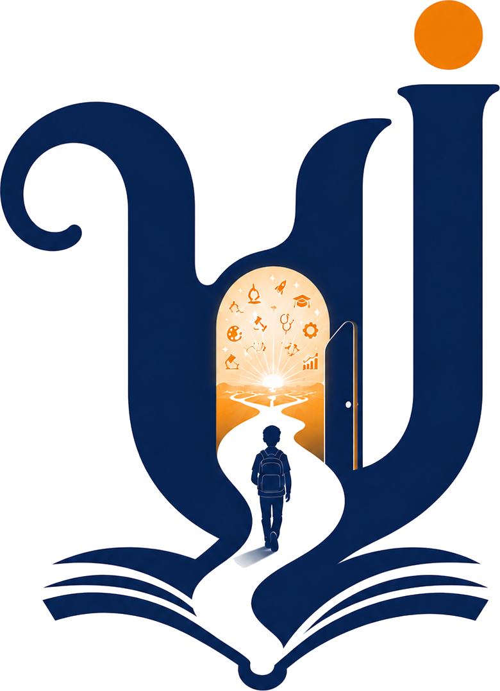
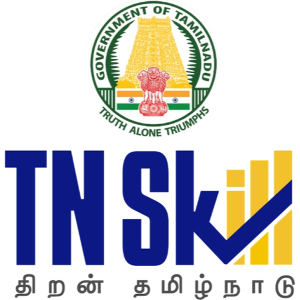

United Nations
Education volunteer
Supporting students in Tier 2 and Tier 3 cities with career awareness, exposure to technology and consulting work, and industry readiness.

Every possibility belongs to every student.

Where our team volunteers as mentors
The question we started with
Sixty-six out of a hundred students here take that path. About two choose arts. Almost nobody has written down how that decision actually gets made, so we went to find out.
Learning platformsask how is this student learning.
Assessmentsask what do the marks reveal.
Guidance programmesask where is this student headed.
Nobody asks what needs to happen next for this student: who is responsible, whether it happened, and whether it changed anything.
This is the reason the research exists.
Filled: already recorded · Hollow: nowhere to put it
Who decides. What information reaches the family, and when it arrives. What it costs when it arrives late.
Not a model. Not a survey. Fieldwork, school by school. We go and sit with principals, teachers, students and parents, and write down what is actually happening.
Then we test small ways of responding to what we find, with schools and communities willing to try them while they are still being shaped.
யாதும் ஊரே
யாவரும் கேளிர்Yaadhum oore, yaavarum kelir
Every town is our own.
Every person, our kin.Kaniyan Pungundranar · Purananuru 192 · Sangam era
We took the line as a premise rather than a slogan. If no accident of birth decides what belongs to whom, then the district a student was born in should not quietly decide which stream is available to them.
That is a claim about the world that can be checked, school by school, and checking it is the work.
Every possibility belongs to every student.
The same claim, narrowed to one thing we can actually go and check.
This is the public picture, and it is the only part of this story already written down. Everything underneath it, how each of these students arrived where they did, is what we are in schools to find out.
Of every hundred Tamil Nadu students
Nobody can tell you which of these places was chosen, and which was simply arrived at.
The research tells us how these decisions are really made. Both of the programmes below are small, free attempts to respond to what we find, tested with the people they are meant to help.
Long before Yaadhum, we were already mentoring students through three volunteer programmes. That work is what put us in front of the problem, and we are still doing it.
Education volunteer
Supporting students in Tier 2 and Tier 3 cities with career awareness, exposure to technology and consulting work, and industry readiness.
Vidyanjali mentor
Registered under the Government of India’s school volunteer programme, working with students on career awareness and the educational pathways open to them.
Industry mentor, TNSkill
Volunteering with Tamil Nadu’s skills mission, giving college students a clear view of technology and consulting careers before they have to choose one.
These are the volunteer mentoring roles our own team holds. The organisations above are not affiliated with Project Yaadhum and do not endorse, certify or accredit this work.